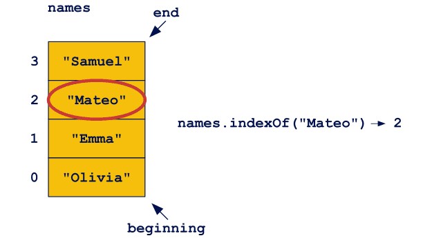
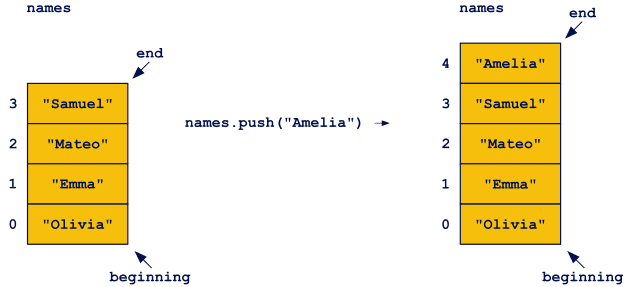
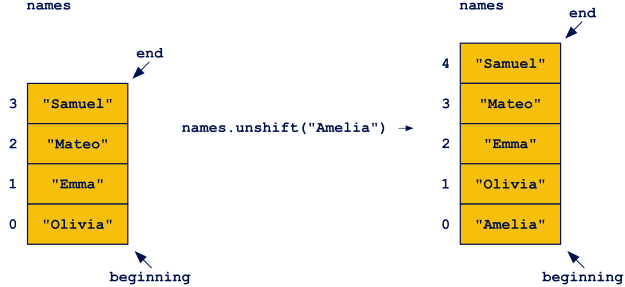
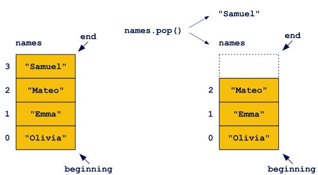
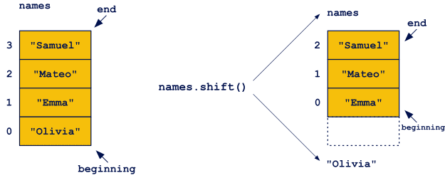
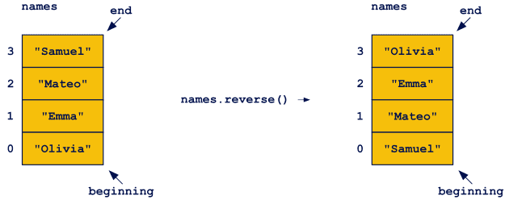

This is Lesson-4 of Learning JAVA SCRIPT. In this part of Lesson we are going to discuss about :
Quite recently we introduced the concepts of method and property. They appeared when we were talking about the String type. These were functions and values related to a specific object. Now it turns out that an array is implemented as an object in JavaScript, so it probably also has its methods and properties. And indeed it does. There are many very useful methods that help us to work with arrays, such as combining arrays, cutting out elements, sorting, or filtering.
The length property is used to get information about the length (the number of elements) of the array (including empty positions between existing elements).
The indexOf method is used to search the array to locate a given value. If the value is found (the element is in the array), its index (position) will be returned. The method returns -1 if the element is not found. If there is more than one element with the same value in the array, the index of the first element is returned.
The push method places the element given as its argument at the end of the array. The length of the array is increased by 1, and the new element is inserted on the right (it has the largest index of all elements).
The unshift method works similarly to push, the difference being that a new element is added to the beginning of the array. The array length is increased by 1, all the old elements are moved to the right and the new element is placed in the empty space that has been created at the beginning of the array. The index of the new element is 0.
The pop method allows you to remove the last element from the array. As a result of its execution, the element with the largest index is returned, while at the same time it is removed from the original array. The length of the array is obviously reduced by 1.
The shift method works similarly to pop, only this time we remove the element from the beginning of the array (with the index 0). The removed element is returned by the method, all other elements are shifted to the left, completing the empty space. The length of the original array is reduced by 1.
The reverse method reverses the order of elements in the array. As a result of its calling, the first element of the original array will become the last, the second last but one, and so on.
The slice method allows you to create a new array from selected elements of the original array. Calling the method does not affect the original array. The method takes either one or two integer values as arguments.
The basic combinations are:
The concat method creates a new array by attaching elements from the array given as an argument to the original array elements. The method changes neither the original array nor the array specified as an argument.